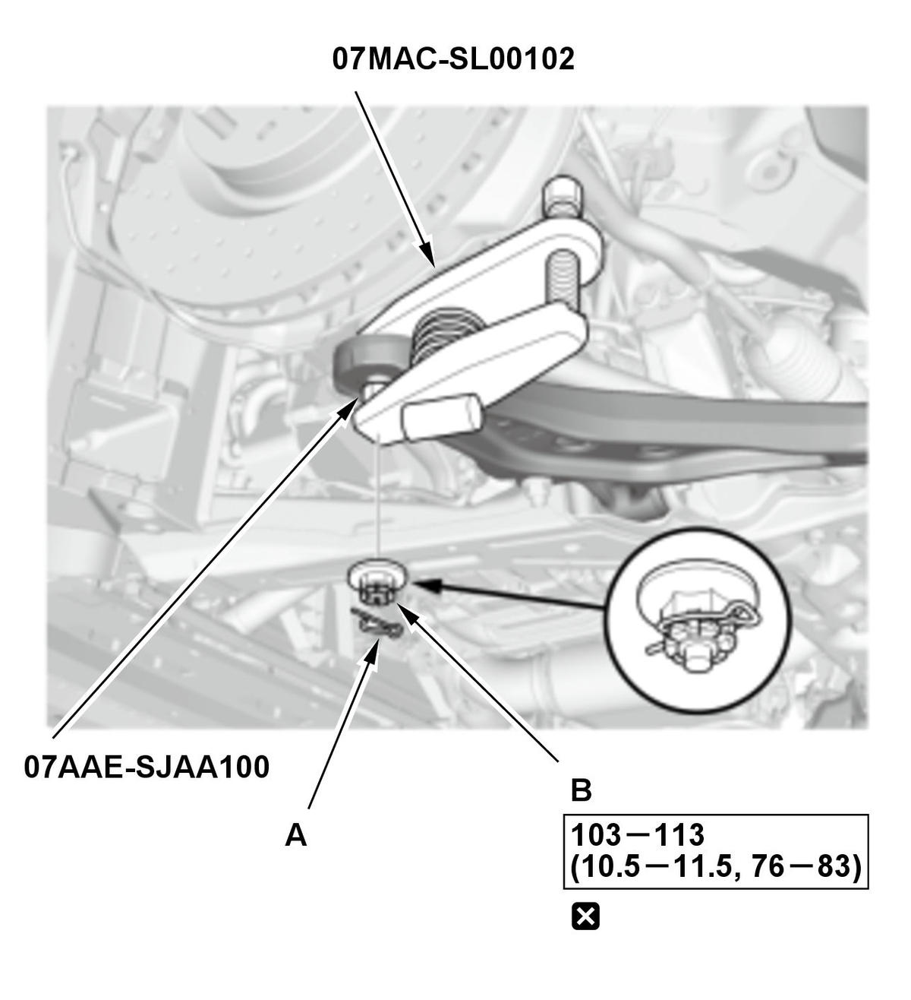
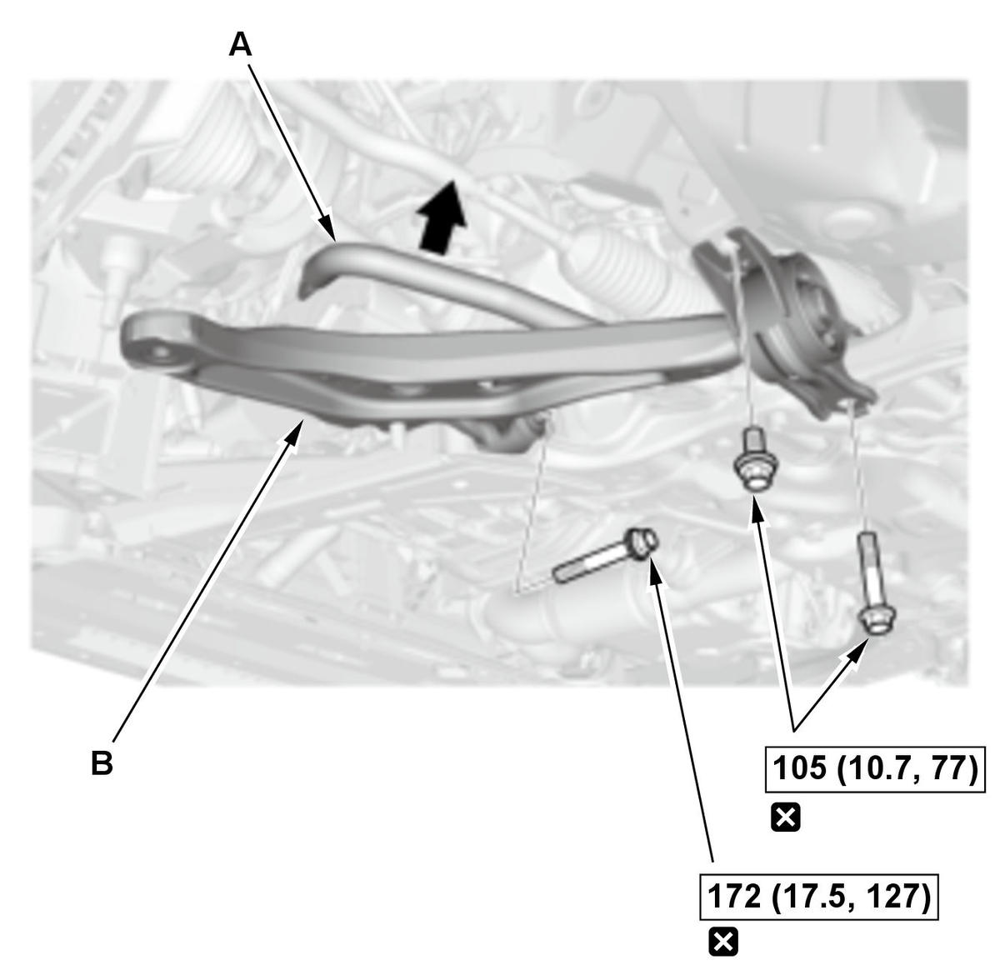

Removal and Installation
NOTE: How to read the torque specifications .
- Vehicle - Lift
- Front Wheel - Remove
- Engine Undercover - Remove
- Stopper Link - Disconnect
1. Disconnect the stopper link from the lower arm . - Front Suspension Stroke Sensor - Disconnect
1. Disconnect the front suspension stroke sensor from the lower arm . - Stabilizer Link - Disconnect
1. Disconnect both sides of the stabilizer link from the stabilizer bar . - Lower Arm - Remove

Courtesy of HONDA, U.S.A., INC.1. Remove the lock pin (A) from the lower arm ball joint. NOTE: During installation, install the lock pin as shown after tightening the new castle nut.
2. Remove the castle nut (B).
NOTE: During installation, note these items.
- Use a new castle nut.
- Torque the castle nut to the lower torque specification, then tighten it only far enough to align the slot with the ball joint pin hole. Do not align the castle nut by loosening it.
NOTE:
- Be careful not to damage the ball joint boot when installing the ball joint remover.
- During installation, note these items.
-
- Be careful not to damage the ball joint boot when connecting the knuckle.
- Before connecting the ball joint, degrease the threaded section and the tapered portion of the ball joint pin, the ball joint connecting hole, the threaded section, and the mating surfaces of the castle nut.

Courtesy of HONDA, U.S.A., INC.4. While pushing up on the stabilizer bar (A), remove the lower arm (B).
NOTE: During installation, note these items.- Use the new lower arm mounting bolts.
- Loosely install the nuts and/or bolts to install the bushings, load the suspension with the vehicle's weight, and then tighten the nuts and/or bolts to the specified torque.
- All Removed Parts - Install
1. Install the parts in the reverse order of removal. - Wheel Alignment - Check